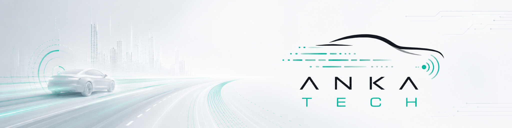

Produktutveckling
Testnära produkter, verktyg, plattformar och integrationslösningar för moderna engineeringteam.
Läs merANKA Tech hjälper tekniska team från behov och osäkerhet till verifierad lösning. Fokus ligger på produktutveckling, Euro NCAP-relaterad provning, testautomation, mätdata och robusta systemflöden där resultatet måste fungera i verkligheten.

Vad ANKA Tech gör
Sidan signalerar snabbt vad bolaget kan hjälpa till med: utveckling av testnära verktyg, felsökning i komplexa miljöer och verifiering där precision, repeterbarhet och spårbarhet är centralt.
Testnära produkter, verktyg, plattformar och integrationslösningar för moderna engineeringteam.
Läs merTeknisk analys, felsökning och riktade insatser när system, testmiljö eller dataflöde måste stabiliseras.
Läs merADAS, Euro NCAP-relevanta flöden, HIL, GNSS/INS och automatiserad datainsamling.
Läs merEngineering process
System, begränsningar, dataflöden, utrustning och kravbild kartläggs.
Verktyg, integrationer eller testflöden utvecklas nära den verkliga användningen.
Leveransen testas, dokumenteras och görs praktiskt användbar för teamet.
Tekniskt sammanhang


Aktuella uppdrag
Nästa steg